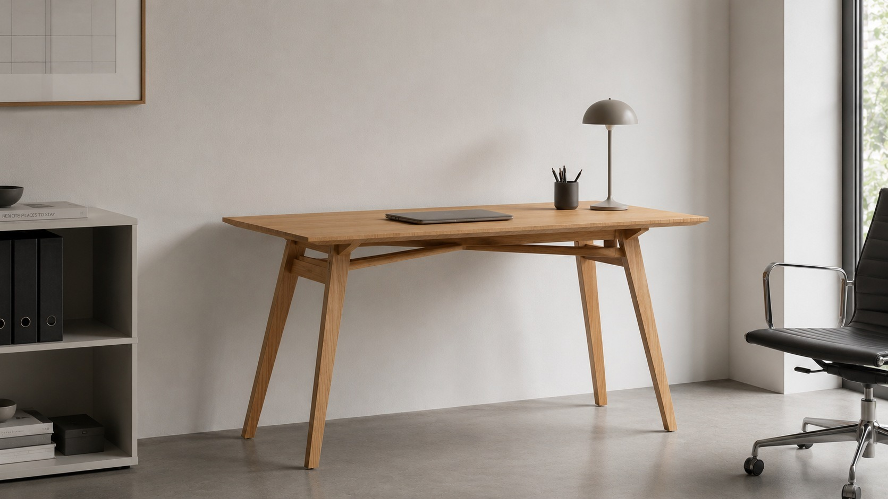
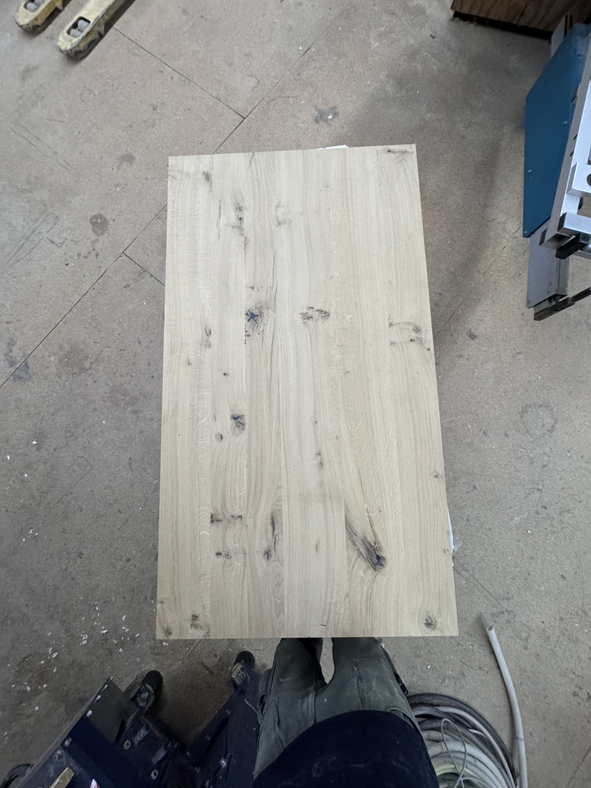
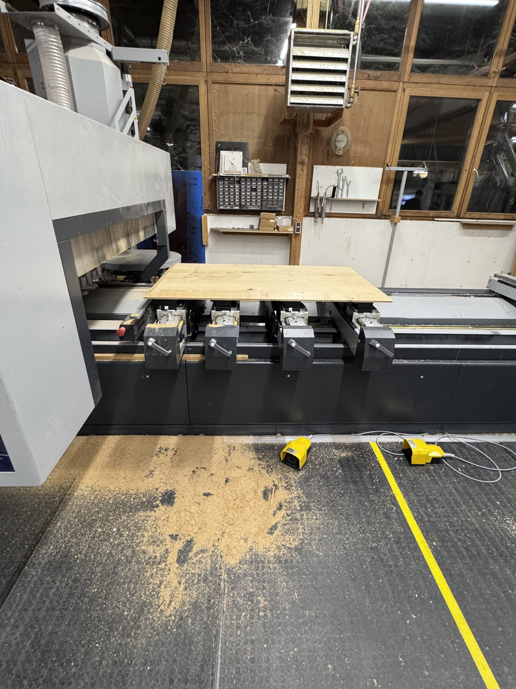
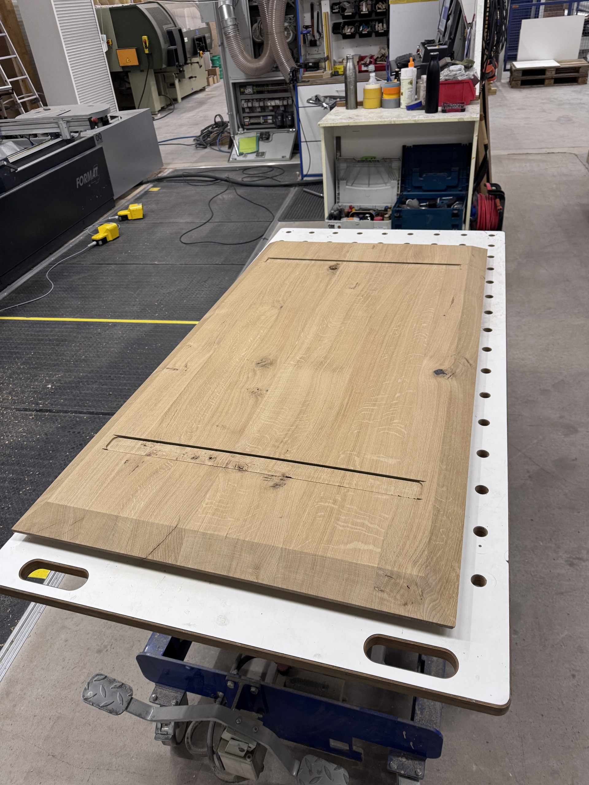
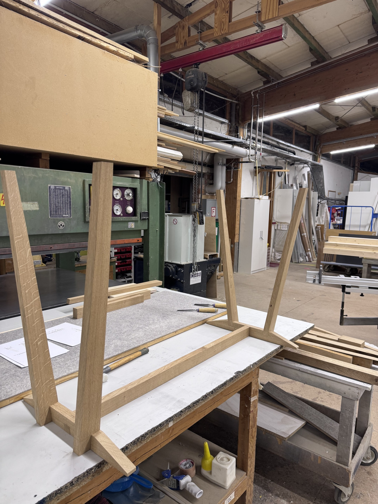
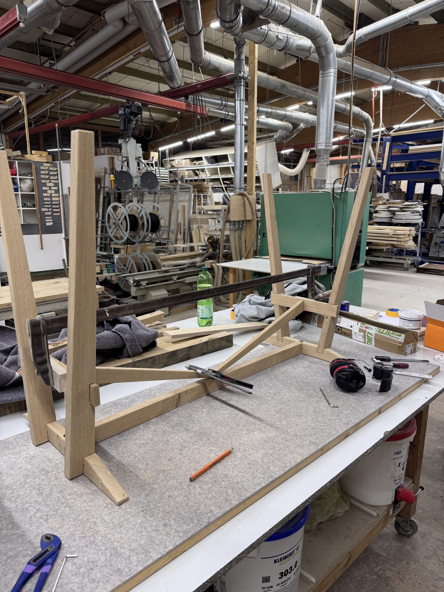
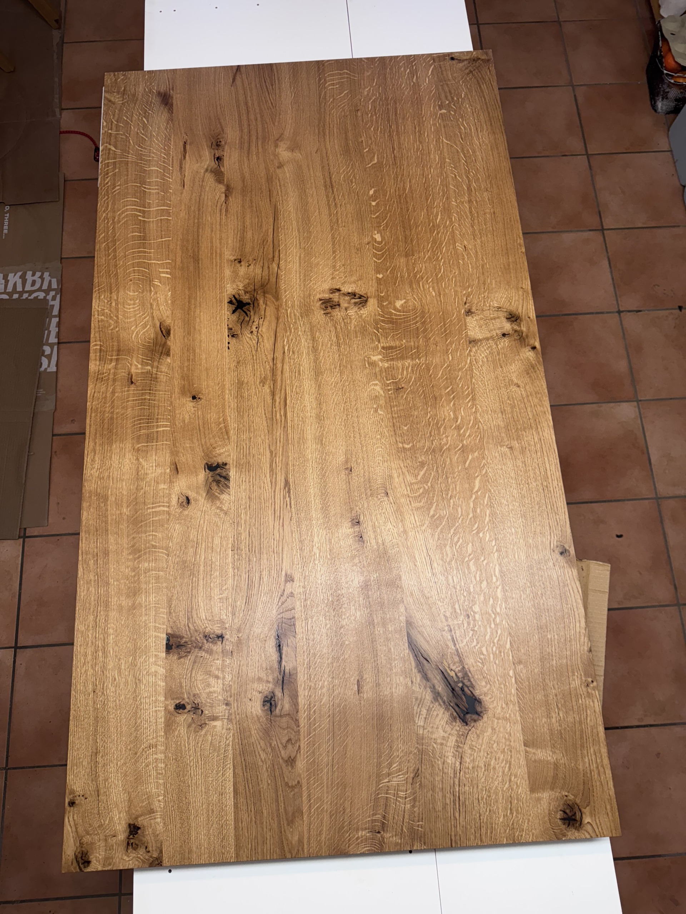
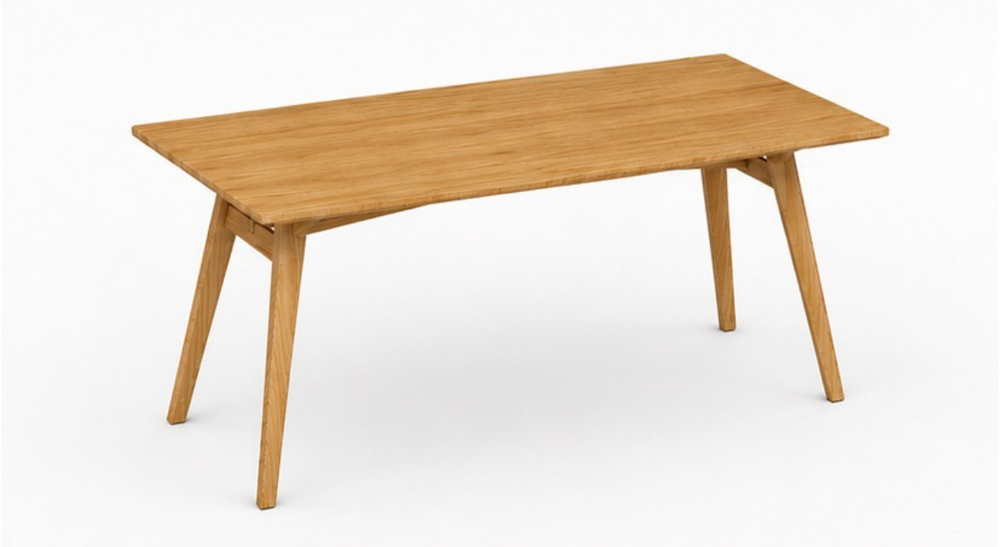
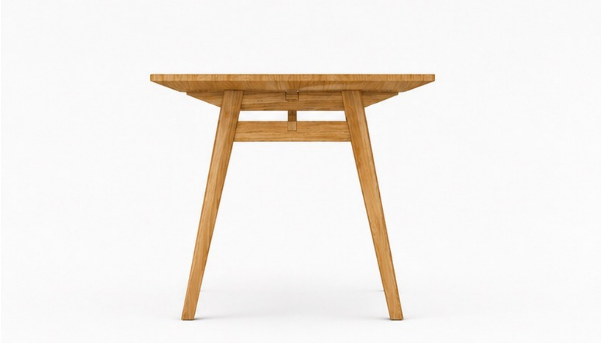

Schlicht.
reduziert in der Form, bewegt im Stand.

Ein massiver Schreibtisch aus Eiche, in klassischer Handwerkskunst selbst entworfen und gefertigt.
Die konisch zulaufenden Beine und die Schweizer Kante der Platte verleihen dem Tisch eine leichte, ruhige Erscheinung. Getragen wird diese Klarheit von einer soliden Konstruktion: klassische Schlitz- und Zapfenverbindungen sorgen für dauerhafte Stabilität, während lösbare Schraubverbindungen den Schreibtisch flexibel im Auf- und Abbau halten. So verbindet er handwerkliche Langlebigkeit mit einer reduzierten, zeitlosen Ästhetik.
Bauprozess







